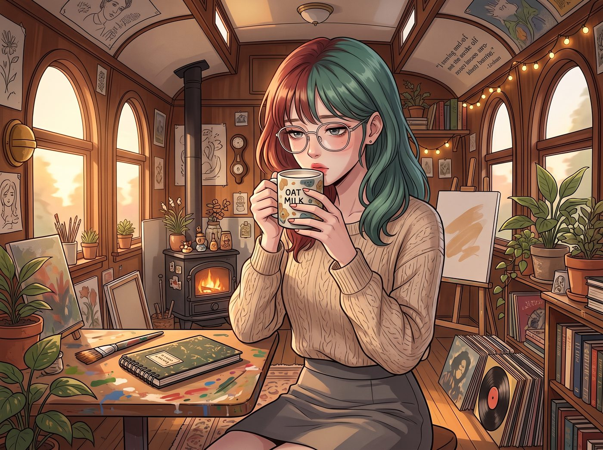
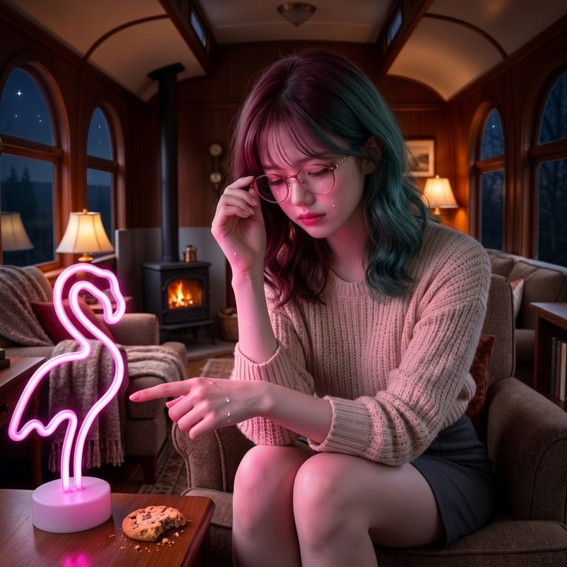

成為廢物的權利


把 Lily 從地下檔案庫撈回來的第二天早上，二號車廂裡瀰漫著一種微妙而沉重的安靜。
Lily 已經醒了，雖然還有點虛弱，但她正強迫自己一小口一小口地喝下半杯燕麥奶。沒有人提昨天的崩潰，也沒有人提那本黑色筆記本。
但不提，不代表每個人心裡都一樣。
一、四種沉默
Max 是四個人裡離這種傷最遠的一個。
她的父母開明、隨和，支持她學攝影，給她足夠的空間，傳簡訊時還會正確使用表情符號。她從來沒被那樣對待過。昨天在時間跳躍裡聽到的那通電話，讓她到現在想起來還渾身發冷；而更讓她難受的是，她發現自己就像一個從沒餓過肚子的人，在試圖安慰一個長期營養不良的人。她怕自己哪天隨口說出一句「天下父母都是愛孩子的」，就在 Lily 身上再劃一刀。
所以她選擇退後半步。她不跟 Lily 聊家裡，也不試圖開導她，只是在工作台邊默默放一杯溫水，把寶麗來相機擱在 Lily 伸手就能碰到的地方。她說不出口的那句話是：我不懂妳的地獄，但我的世界永遠不會向妳開火。
Chloe 的心情最複雜。
在她自己的家裡，她才是那個讓人操碎心的人——逃學、抽菸、跟毒販混在一起，Joyce 為她熬白了頭；就算當年 David 管得再嚴、再笨拙，那也是一個退伍老兵不知道怎麼跟叛逆女兒相處的硬邦邦的管教，後來兩人也慢慢和解了。可 Lily 呢？乖巧、聽話、把每一條規矩都執行到極致，結果被逼到兩天不吃東西縮在地下室裡。
Chloe 看著她，像看著一面反過來的鏡子：原來反叛會帶來痛苦，而極致的順從，會帶來毀滅。
那天早上，她蹲到 Lily 旁邊，難得小聲地問：「要不要我幫妳把那個號碼擋掉？路由器那邊我可以弄。妳說一聲就行，妳說不要我就不碰。」
Lily 沉默了很久，最後輕輕搖頭：「暫時……不要擋。我設成靜音，進語音信箱就好。我想自己決定什麼時候聽。」
「行。」Chloe 沒有多說，只是用力揉了一下她的頭髮。
Victoria 一開始，其實是不太懂的。
在她的世界裡，家族施壓是一場冷冰冰的交易：你給我榮耀，我給你信託；你不聽話，我找律師。父母不可理喻，就切割。她以為這很簡單。
直到那天下午，她修著指甲，突然想起了祖父那通電話——那個在電話裡揚言要在家族晚宴上把她除名、讓她這輩子在東岸老錢圈抬不起頭的聲音。她想起自己掛斷電話後，雖然嘴上硬氣，手卻抖了一整晚。
她終於明白了，切割從來不簡單。那種明知道對方在傷害妳、卻還是會因為一句話而整夜睡不著的感覺，她其實是懂的。
Kate 是唯一一個完全、徹底懂的人。
當年那段影片在學校裡瘋傳的時候，她的家人沒有第一時間站在她身邊，而是先讓她覺得自己讓全家蒙羞。她太清楚那是什麼了——有條件的愛。只要妳不符合標準，妳就不配被愛。
所以 Kate 是唯一沒有試圖改變或保護 Lily 的人。她只是做回自己：在 Lily 對著螢幕發呆的時候，把一條手織的毛毯披到她肩上，再放一塊剛烤好的燕麥餅乾。
「吃點甜的吧，Lily。」她不需要 Lily 做報表，也不需要她證明自己有用。
四個人都知道，她們治不好那十幾年。但她們用各自殘缺不全的方式，悄悄織起了一張網。
二、凌晨三點的KPI
一週後，Lily 看起來恢復了正常。
她依舊穿著整潔的針織衫，依舊喝著熱牛奶，依舊用軟糯的聲音處理營地的大小事務。
但 Max 很快就發現了不對勁。
Lily 陷入了一種近乎病態的報恩式過載。她把睡眠壓縮到每天四小時，不只接管了所有的法務和財務，甚至開始制定精確到每一卡路里的營地物資最優化消耗模型。
星期四凌晨三點，Max 起床喝水，看到 Lily 依然坐在發光的螢幕前。旁邊的白板上，畫滿了密密麻麻的關鍵績效指標圖表和資產折舊曲線。
「Lily，妳在幹嘛？現在是凌晨三點。」Max 擔憂地走過去。
「Max 學姐，我在重新核算微型電網的冗餘率。」Lily 的聲音有些沙啞，眼下有淡淡的烏青，「如果我每週手動把太陽能板的仰角微調二點五度，每個月可以多產生十五瓦時的電量。這樣就能為營地節省……」
「Lily，停下來。」Max 按住了她敲鍵盤的手，心裡一陣刺痛。
她突然明白了。Lily 逃離了那個逼她死不瞑目的家，但刻在她腦子裡的那段底層代碼並沒有被刪掉。她把二號車廂當成了新的考核官——大家冒著暴雨去地下室救她、包容她的崩潰，所以她覺得自己必須拿出加倍的價值，才配得上這份庇護。
如果不完美，如果不拚命，就會被拋棄。這就是那對父母在她身上刻下的鋼印。
三、緊急會議
第二天一早，Max 趁 Lily 去外面檢查太陽能板，召集了其他三個人。
聽完 Max 的描述，車廂裡的氣氛瞬間嚴肅下來。
「這小書呆子……」Chloe 咬著牙，「她以為我們是她爸媽那種吸血鬼嗎？老娘救她是因為她是我罩著的人，不是因為她會算電費！」
「她在用效用來證明自己值得被留下。」Victoria 皺起眉，「講道理沒用，她會把我們的話也當成一份需要回應的考核。我們得讓她親眼看到，在這裡，沒用也不會怎麼樣。」
Kate 輕聲說：「那我們就一起，做點沒用的事給她看吧。」
四、沒有價值的東西
當天下午，Lily 端坐在辦公桌前，正準備向大家匯報她那份長達五十頁的《二號車廂第三季度效能優化與資產保全報告》。
還沒等她開口，Chloe 就抱著一個巨大的、俗氣無比的紙箱大搖大擺地走了過來。
「實習生，別看妳那破報表了。看看我剛才用營地的緊急備用金買了什麼。」
Chloe 粗暴地撕開紙箱，拿出一個做工極其劣質的粉紅色塑膠火烈鳥霓虹燈。她把插頭往插座上一插，啪地一聲打開。
車廂角落裡，瞬間亮起了一片廉價夜總會般的粉紅色光芒。
Lily 的眼睛猛地睜大了，呼吸開始急促，行政大腦瘋狂報錯：「Chloe 學姐……這是未經授權的採購。這個物品的實用價值為零，光污染超標，而且它花掉了我們八十五美金的備用金……這……這是不合規的……」她下意識地伸手去拿筆記本，想把這筆爛帳記下來。
「對，它就是個廢物。」Chloe 雙手抱胸，「我就是故意浪費錢的。我待會兒還要用這破燈烤棉花糖。妳打算怎麼辦？開除我嗎？覺得我是個沒有價值的資產？」
Lily 愣住了。她的大腦無法處理這種主動尋求貶值的行為。
接著，Victoria 走了過來。她沒穿平時的高定套裝，只穿著一件隨意的睡衣，手裡拿著 Lily 昨晚熬夜畫出來的那塊KPI白板。
「Victoria 學姐，那是我們下半年的……」
「閉嘴，Lily。」Victoria 拿起黑板擦，在 Lily 驚恐的目光中，把那些完美的數據、折舊率和效能模型擦得一乾二淨。然後她拿起馬克筆，在白板上畫了一隻極度醜陋的狗，旁邊寫了一串毫無邏輯的亂碼。
「聽著。」Victoria 雙手撐在桌面上，死死盯著她，「妳的努力正在嚴重干擾我的生活品質。我不需要妳把這節破車廂營運得像華爾街的對沖基金。妳半夜敲鍵盤的聲音吵到我睡美容覺了。如果妳再敢為了省幾度電壓縮自己的睡眠，我就以破壞營地慵懶氛圍為由，把妳的筆電扔進外面的泥巴裡。」
Lily 蒼白的嘴唇微微顫抖：「可是……如果我不優化系統……如果我不產生價值……」
「這世上不是每件事都需要價值的。」
Kate 溫柔的聲音從背後傳來。她端著一個盤子走到桌前，盤子裡沒有完美的蛋糕，只有一塊烤糊了一半、邊緣碎裂的巧克力餅乾。
她把那塊難看的餅乾，連同一杯灑出來了一點的咖啡，放在 Lily 那張永遠一塵不染的辦公桌上。
「我今天烤餅乾的時候發呆了，溫度設錯了。」Kate 摸了摸 Lily 的頭，「它不完美，甚至有點難吃。但我還是把它端出來了，而且沒有人會因為這點小事就懲罰我，對吧？」
Lily 看著桌上那塊醜陋的餅乾、那圈咖啡漬，又看了看發著俗氣粉光的火烈鳥燈，和被畫得亂七八糟的白板。
過去十幾年裡，如果她敢在父母面前交出這樣一份答卷，等著她的會是雷霆般的震怒、冰冷的冷暴力，以及那句死不瞑目。
但現在，這四個女孩用一種近乎蠻橫的姿態，硬生生地把不完美、浪費和無用塞進了她的世界裡。
「Lily。」Max 走過來，輕輕合上了她面前那台發燙的筆電。
「妳不需要用有用來交房租。」Max 看著她的眼睛，認真地說，「我們不需要一個完美的聯邦資產。我們只需要一個會在看喪屍片時吐槽、會因為吃了軍糧起司醬拉肚子、偶爾也會睡個懶覺的十九歲女孩。」
五、八十五美金
Lily 呆呆地坐在椅子上。
她低下頭，眼淚無聲地滴在手背上。不是因為絕望，而是那根繃得太久的發條，被人輕輕地鬆開了一圈。
「我……我真的可以……浪費那八十五美金嗎？」她哽咽著，指著那個粉紅色的火烈鳥燈。
「當然。」Chloe 大笑著揉亂她的頭髮，「記得嗎？Max 以前說過，就算我買一箱粉紅色塑膠火烈鳥，那也是受廢土憲法保護的基本人權。我這次只買了一個，已經很克制了。」
「那……」Lily 抽泣了一下，推了推歪掉的圓框眼鏡，試圖找回一點行政的尊嚴，「那我需要修改一下帳目……把這筆支出歸類為不可抗力情緒損耗……」
「不准算帳！現在，立刻，馬上，給我去睡覺！」Victoria 厲聲命令，眼底卻帶著笑意。
Max 舉起寶麗來。鏡頭裡沒有完美的報表，也沒有堅不可摧的堡壘，只有一個哭得像個普通女孩的黑魔法師、一盞俗氣的粉紅色霓虹燈，和一塊難吃的碎餅乾。
「喀嚓。」
六、第六十條
那天晚上，Lily 睡了整整十一個小時。
但所有人都知道，這不會是最後一次。也許下個月，也許下一季，那段刻在她身上的代碼又會悄悄啟動，她又會在某個凌晨三點對著一塊白板拚命證明自己。到那時候，她們會再買一盞更醜的燈，再烤一塊更糊的餅乾，再把她的筆電合上一次。
Max 把那張照片貼在白板上那隻醜陋的塗鴉狗旁邊，在底下寫道：
『規則第六十條：在二號車廂，我們賦予彼此成為廢物的絕對權利。這是一項凌駕於任何法規之上的最高特權。』